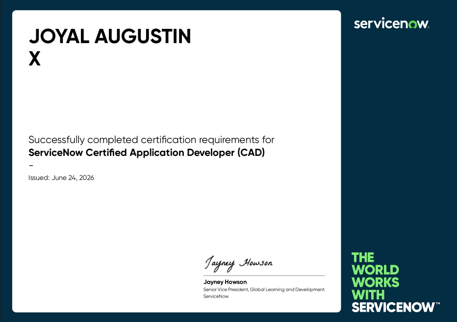
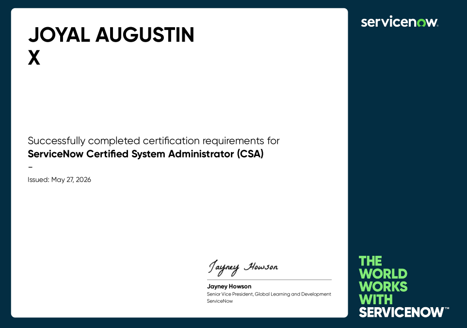
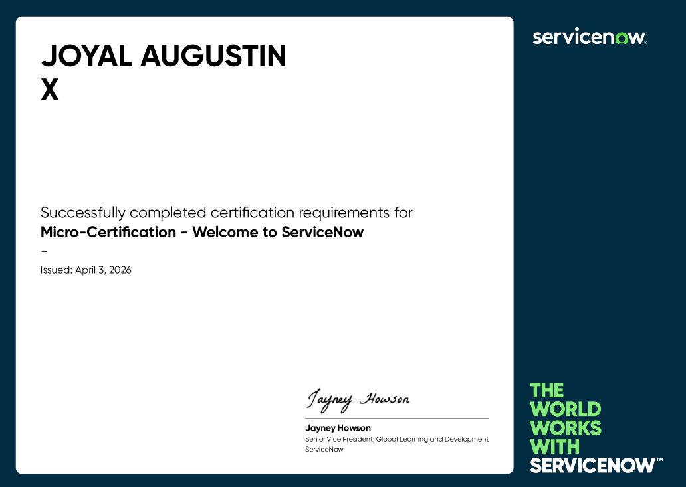
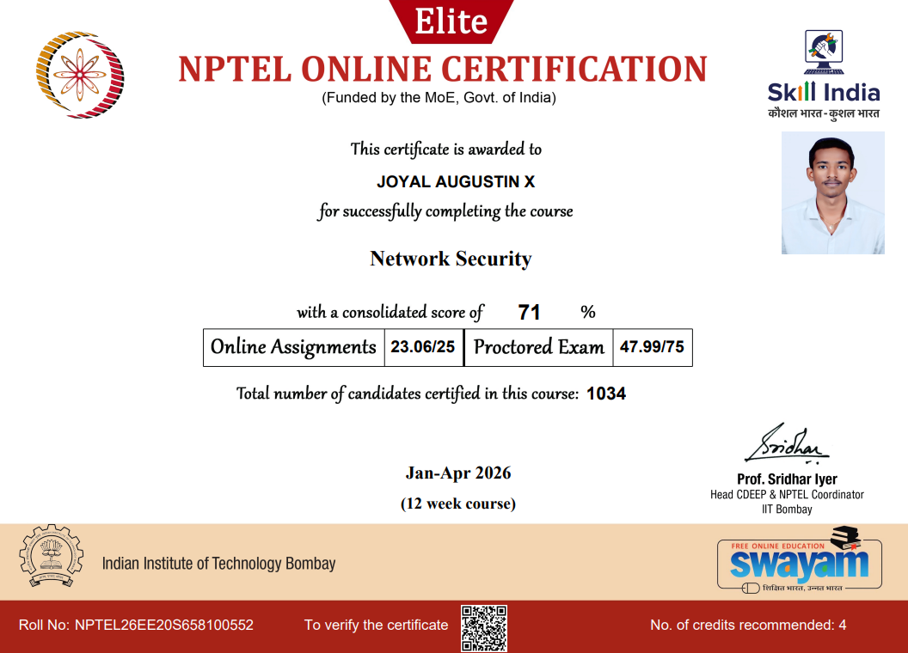
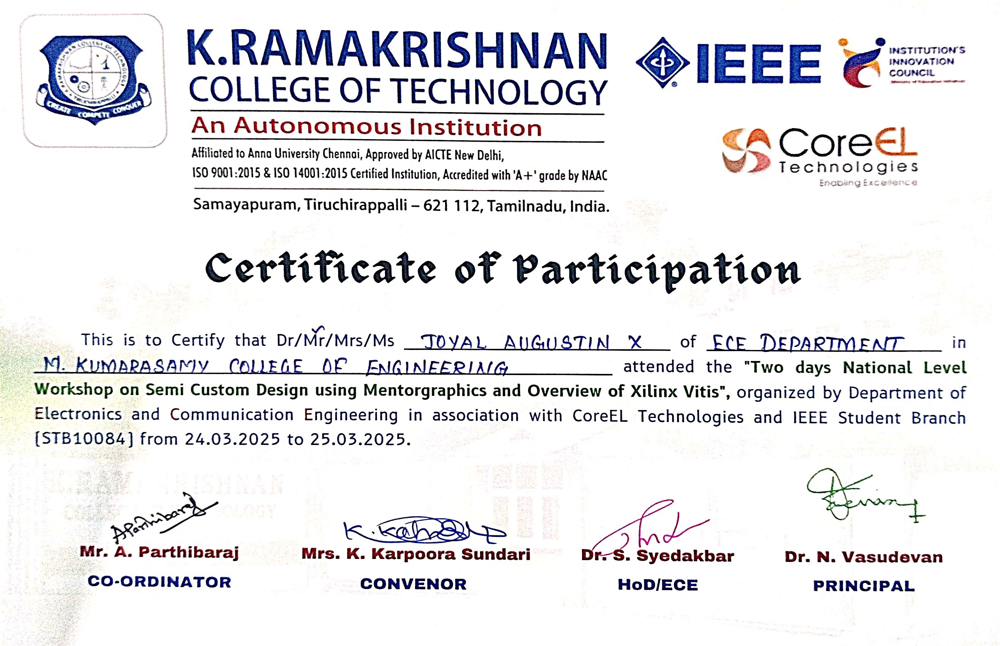
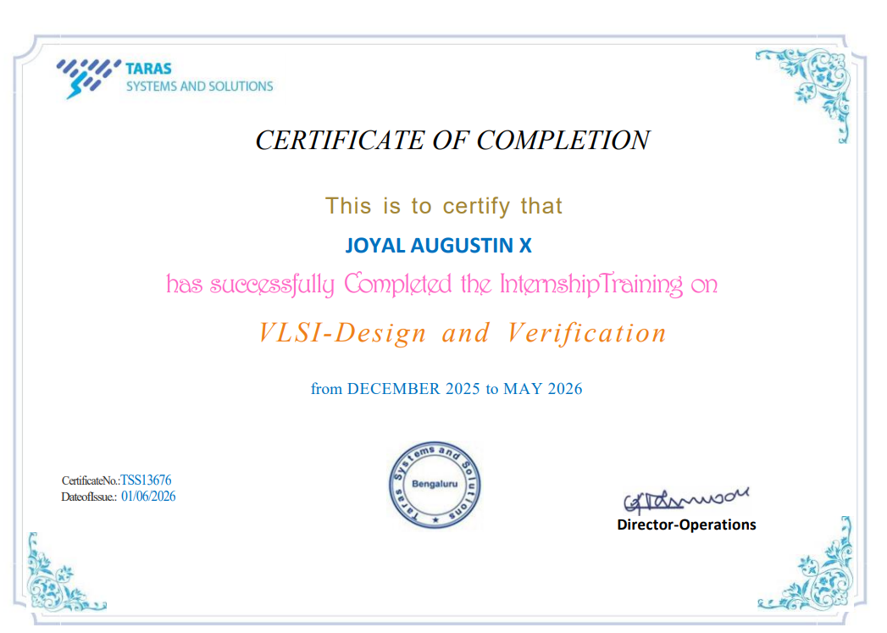

These certifications demonstrate my commitment to continuous learning and validate my knowledge in ServiceNow, Cloud Computing, Network Security, VLSI and modern software technologies.
My most valuable professional certification.

Successfully earned the ServiceNow Certified Application Developer (CAD) certification, demonstrating expertise in designing, developing and deploying enterprise applications using the ServiceNow platform.
Certifications that showcase my technical expertise, continuous learning, and commitment to professional development.

Successfully achieved the ServiceNow CSA certification, validating my ability to configure, administer, and maintain enterprise ServiceNow environments.
Issued: 2026

Completed the introductory ServiceNow learning program covering platform basics, navigation, workflows, and digital transformation concepts.

Studied cryptography, authentication, network attacks, firewalls, intrusion detection, and secure communication protocols.

Learned cloud architecture, virtualization, deployment models, service models, distributed computing and cloud security.

Completed practical training in VLSI semiconductor design using Mentor Graphics tools with hands-on exposure to chip design concepts.

Successfully completed a 6-month internship in VLSI Design & Verification at Taras Systems and Solutions, gaining hands-on experience in Verilog HDL, SystemVerilog, UVM, digital design, and verification methodologies.
I believe that continuous learning is the key to becoming a successful software engineer. I am always exploring new technologies, earning certifications, and building practical projects to strengthen my technical expertise.